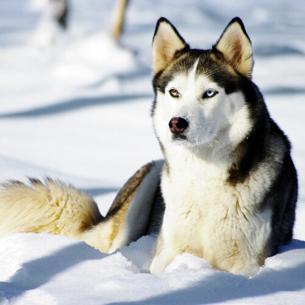
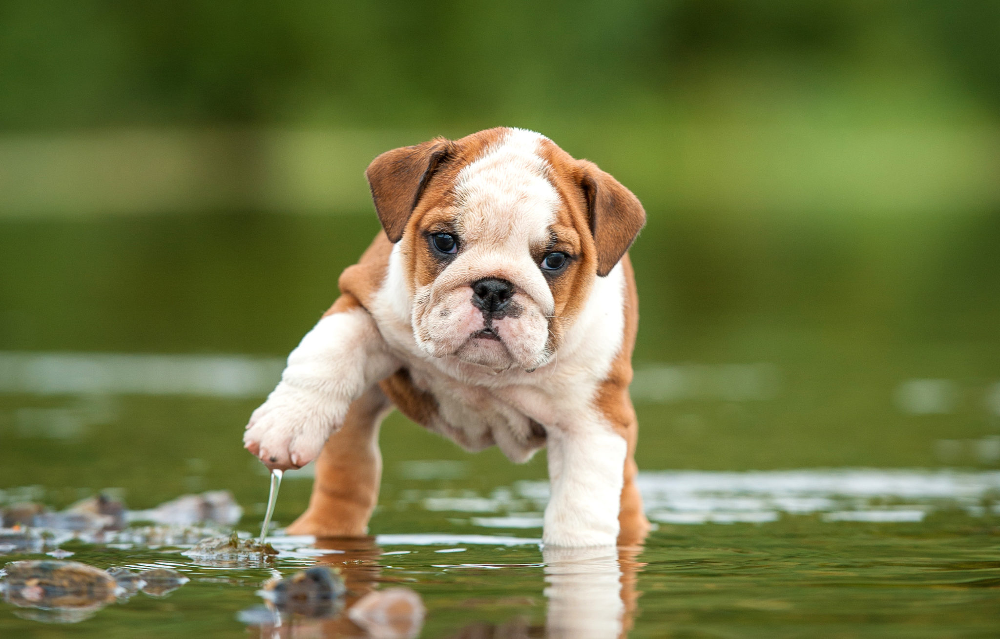

HUSKY
Es una de las razas más antiguas y que se utilizó como perro de trabajo, en concreto, tirador de trineos. Nació hace alrededor de 3000 años en una tribu de nómadas esquimales, los chkchis, que vivían al este de Siberia. El husky (que signfica 'ronco' aludiendo a su particular voz) era un perro de tiro, de caza y pastor. De hecho, fue el gran ayudante de esta tribu cuando llegaba el frío y la nieve, pues se convirtió en su medio para desplazarse tierra adentro.
LABRADOR

Es una raza muy sociable, y eso le hace ser gran compañero de otros perros y niños. Siempre está deseoso de tener nuestra atención, el Labrador Retriever se convertirá en un perro paciente que agradecerá enormemente cualquier muestra de cariño que le brindemos. Son perros con mucho entusiasmo y para ellos no hay nada más especial que una persona que le recibe con los brazos abiertos a la cual regalarán todos sus besos. Además en caso de que se cree una situación tensa con otro perro, los labradores son pacíficos por naturaleza y suelen evitar cualquier problema. Son perros que transmiten positividad, es su forma de ser, y cualquier persona que haya tenido un Labrador habrá aprendido de él que siempre se puede ver el vaso medio lleno.
CHIHUAHUA

El chihuahua o chihuahueño es una raza de perro originaria de México. Es una de las razas de perros más antiguas del continente americano, además de ser el perro más pequeño del mundo. El perro chihuahua es originario del estado mexicano de Chihuahua. Sin embargo, a diferencia de lo que muchos creen, no es la razón de su nombre, ya que en la lengua del pueblo rarámuri significa “lugar árido y arenoso”. El nombre original de este ejemplar es chihuahueño y su variación se debió a la manipulación en Estados Unidos para referirse a la raza.
BULLDOG
Los bulldogs proceden de los bullenbeissers, una raza antigua de perros tipo mastín usados para vigilancia y ataque contra animales salvajes en Asiria, Grecia, Egipto y Roma. El bullenbeisser tenía distintos tamaños. En Inglaterra, criaron al gran bullenbeisser original para obtener un perro más pequeño y, durante el reinado del rey Juan (siglo XIII), comenzó su carrera como hostigador de toros. Con el paso de los años, terminaron creando un perro ideal para esta tarea. Por suerte, el hostigamiento del toro se prohibió en Inglaterra en 1835 y los propietarios de bulldogs empezaron a dedicarse a la crianza selectiva para eliminar elementos más agresivos de esta raza y dar con una mascota familiar y de buen carácter.
CONTACTO